What a published day should show when a man is taken off — and when a mark sits on a warning ring
These are pictures of the real app: your branch's build, the everything-week, Saturday already published. Each "Proposed" picture is the same screen with the few lines of styling the build would add, laid on top of the live page — nothing is saved. Pick the width you want to judge by:
Today the desk just looks empty
Outlaw taken off Saturday's OPS DESK, Torch off MASS BRIEF, Basher off the EP-6 sim. The day counts each change and History lists them, but the rows themselves look as if nobody had ever been there — on the week, on the board, and, once published, on the schedule the squadron reads.
The edit week
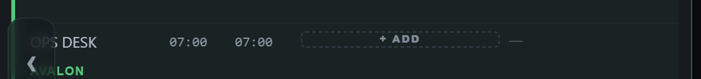
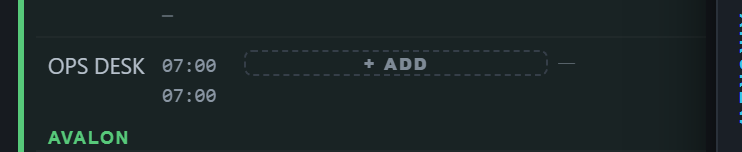
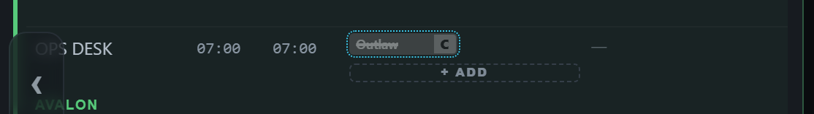
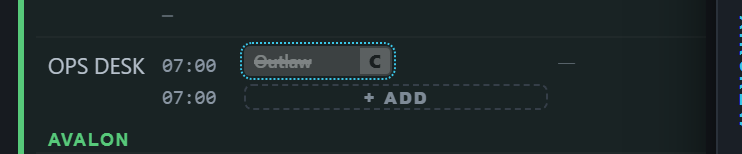


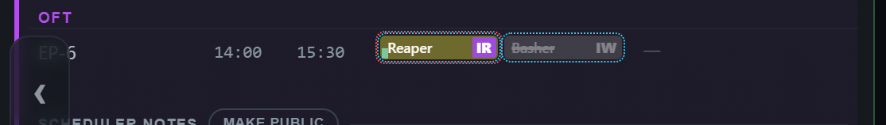
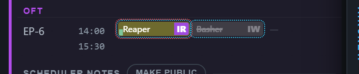
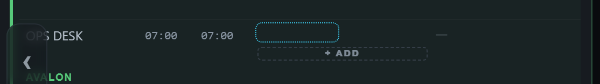
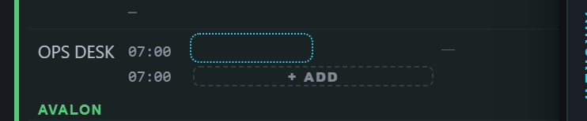
The desk still offers "+ ADD" — the ghost is not a man, and dropping someone on the desk works exactly as today.
The scheduler board
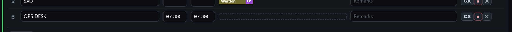
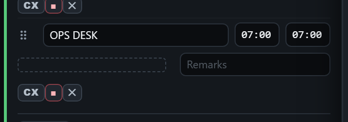
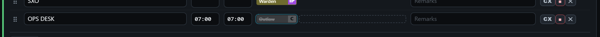
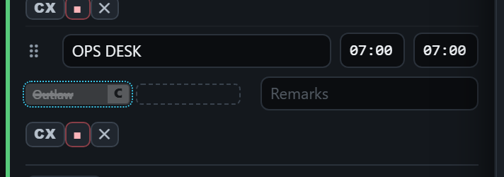
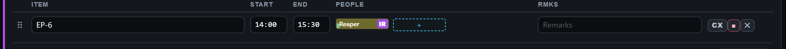
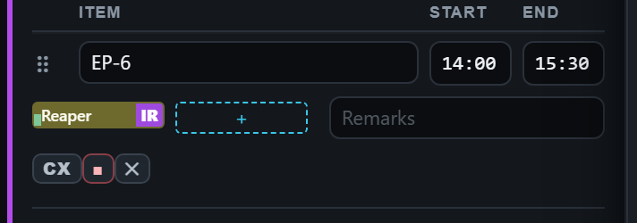
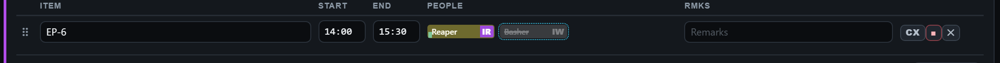
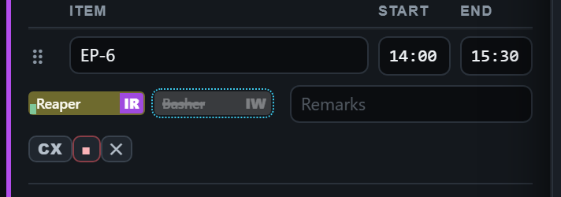
After AL1 goes out — View-only Sched, what the squadron sees
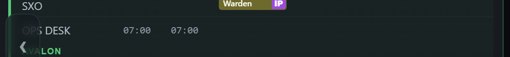
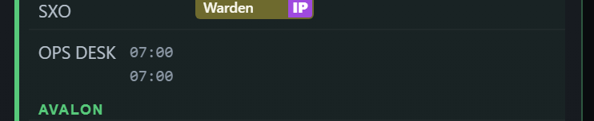
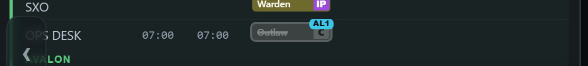
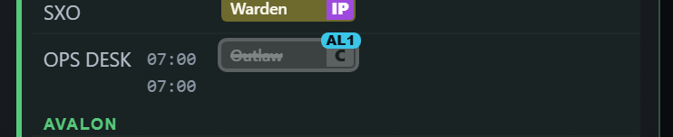
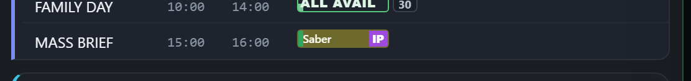
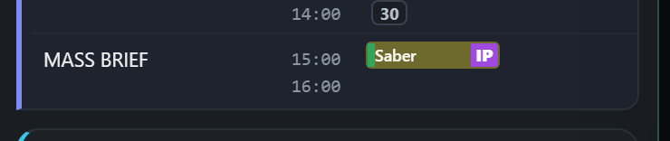
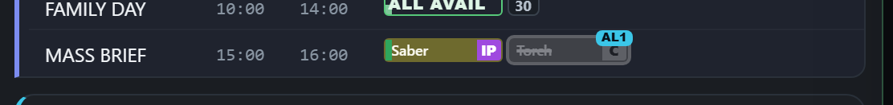
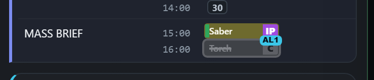
Option B (the third picture in the first box) draws the mark with no name — it shows that something changed on the desk, and History says who. It is lighter, but a reader of the issued schedule cannot tell who left.
Today the mark hides the ring on the edit week
On the edit week and the board, a seat with an unpublished change wears a dotted mark in the next amendment's colour. It is drawn the same way as the dashed red ring (a sanctioned late show) and the dotted red ring (this day wrecks tomorrow's crew rest) — so the mark wins and the ring disappears. The proposal moves the mark to the seat around the puck: the ring stays on the puck, the mark goes round it. View-only Sched already works this way since today's fixes.
Dashed ring — Saber
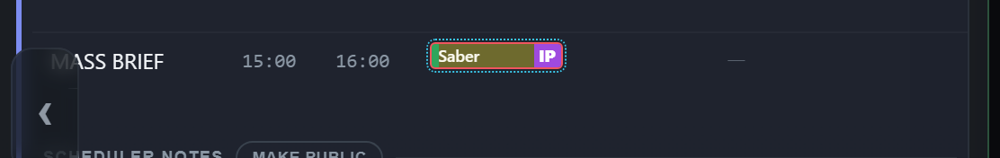
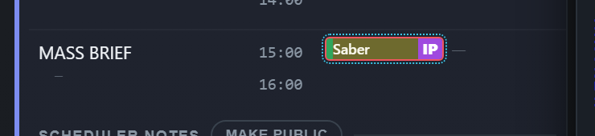
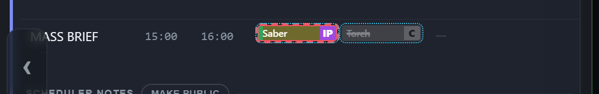
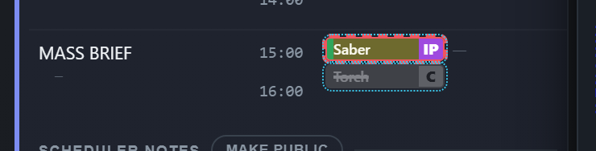
Dotted ring — Reaper
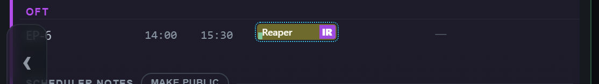
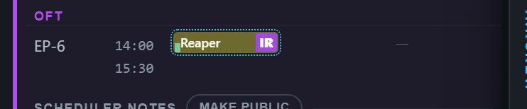


Saber's and Reaper's rings are staged for these pictures — the everything-week has no sanctioned late show on Saturday.
- A man taken off a seat: the ghost (his name struck through) or Option B (the mark alone)? My recommendation: the ghost — the issued schedule then says who left, without opening History.
- How long does the ghost stay? My recommendation: like every other mark — it stays, tagged with the amendment that took him off, until someone is put on that seat.
- The ring: move the amendment mark onto the seat, as pictured? My recommendation: yes — and do the same for the solid mark of an issued change, so both kinds behave alike.